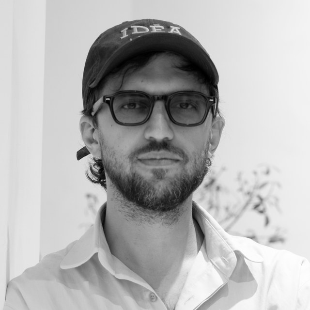

Anton San
Co-founder
A director and creative entrepreneur based in Bucharest. Founder of a video production company specialising in high-end commercial filmmaking, campaigns and brand films for fashion, lifestyle and luxury houses, and co-founder of IRIME Gallery, a multidisciplinary space joining a concept store, contemporary art gallery, creative atelier and private event venue. As founder and creative director of notRainProof, an independent fashion label devoted to craftsmanship and limited collections, he applies one standard across film, fashion and curation: precise visual identity, lasting cultural value.